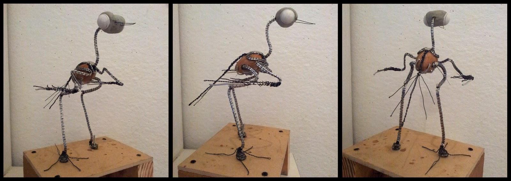
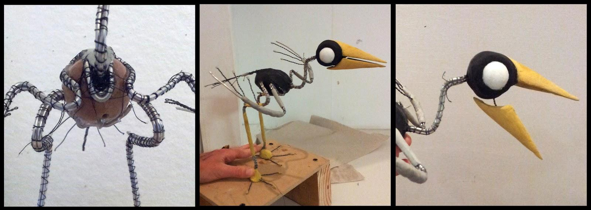
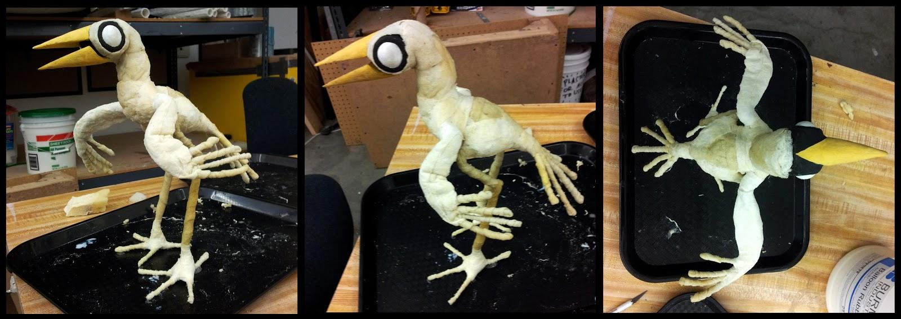
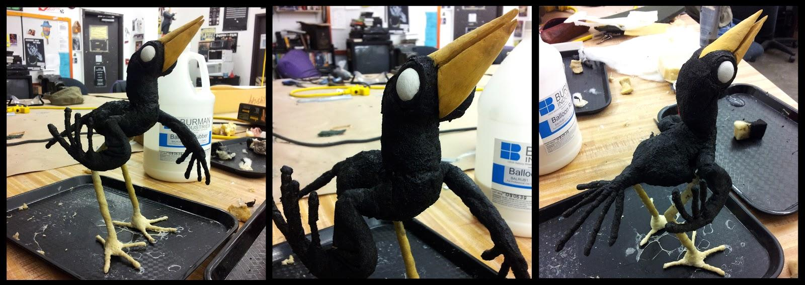

Le Merle
Inspirée par la Gazza Ladra (la Pie Voleuse) de Emanuele Luzzati, cet animal tempétueux et insolent a été imaginé et conçu dans le cadre du cours de réalisation de puppet pour stop-motion de Stephen Chiodo pendant mon échange Erasmus à la Californian Institute of the Arts (CalArts, Los Angeles) en 2012.
Son armature
L’épaisseur et la dureté du fil de fer utilisé dépend du poids et du type de mouvements qu’il va devoir supporter. Jambes, ailes, cou: 2 à 3 gros fil de fer maintenus ensemble par du fil de coton ; queue, serres, plumes: fil de fer fin torsadé. La tête et le bec sont fait avec du magic sculpt.


Une fois l’armature finie, elle est recouverte de fines couches de mousse imbibées de caoutchouc liquide. Le caoutchouc permet à la mousse d’adhérer à elle-même et de garder une forme définie une fois sèche, tout en restant flexible. C’est ce qui fera la chair du merle sur son squelette.

Pour donner à la mousse sa couleur noire sans perdre en élasticité, on mélange du caoutchouc liquide avec de la peinture acrylique et on en recouvre d’une fine couche l’oiseau. Les pattes et les serres sont recouvert d’un fil de laine minutieusement et patiemment collé.
